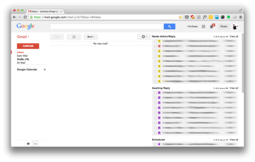
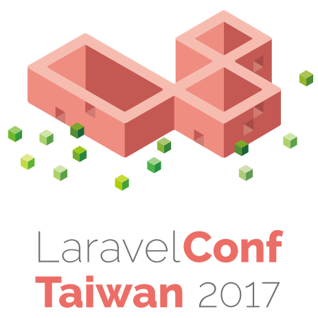

Hello World
CodeTengu Weekly 碼天狗週刊
CodeTengu Weekly 會在 GMT+8 時區的每個禮拜一 AM 10:00 出刊，每期會由三位不同的 curator 負責當期的內容，每個 curator 有各自擅長的領域，如果你在這一期沒有看到自已感興趣的東西，可能下一期就會有了。你也可以瀏覽一下前幾期的內容。
目前的 curator 陣容：
- @vinta - I failed the Turing Test - 科幻迷，最近在讀 Singularity Sky
- @saiday - Imnotyourson - 教召完領了 3500，得了毛囊炎
- @tzangms - Oceanic / 人生海海 - 衝動型購物
- @fukuball - ImFukuball - 有新工作了，但歡迎直接挖角
- @mingderwang - Ethereum enthusiast
- @kako0507 - 熱愛嘗試新事物的前端工程師
- @chiahsien - 徵有經驗的 Objecitve-C 工程師，意者請來 Twitter 私訊我
- @hiroshiyui - 歧路亡羊與中年危機的典範
- @uranusjr - Smaller Things - 邊緣人拉到 conference 還是邊緣人
- @kkdai - 態度萬歲 - 喜歡 Golang 的略懂工程師，最近在學機器學習 (疑?)
- @yhsiang
- @johnlinvc - 在 KSP 內登陸月球中
你也可以關注我們的 Facebook、Twitter、GitHub（Open Source 專案）或微博，有很多 Weekly 看不到的內容。有任何建議或疑問也歡迎來 Gitter 聊聊。
 @tzangms
@tzangms
Making Photos Smaller Without Quality Loss
其實 Etsy 也有一篇 Reducing Image File Size at Etsy
通常網站的圖片除了大小之外, 通常都得考慮壓縮比, 就我的個人經驗就是設定為 85% 左右, 但是看了這兩篇文章提到, 每種圖片類型不太一樣, 例如像是散景的圖片壓縮比搞不好可以壓到 25% (!?) 可是看起來卻跟 92% 壓縮比的差不多。
而這兩篇都提到了 SSIM, 簡單來說就是模仿人類的視覺來比較兩張圖片哪張畫質比較好, 這樣就可以用程式來嘗試多種縮比決定每張圖片要壓多大了。
最近因為最近有同事提到有國家網路速度特別慢, 圖片壓縮比能否提高? 所以這幾兩篇文章讓我特別感興趣, 過一陣子要來嘗試看看了

Don’t drown in email! How to use Gmail more efficiently.
身為敝公司收發最多信的冠軍, 4 月我總共寄出 459 封, 收了 3655 封信, 用 RescueTime 追蹤, 現在時常會出現一天內有 2 ~ 4 個小時的時間都用 Gmail 處理信件的狀況, 所以有效率的處理信件真的變成一個很重要的課題。
即便我用了 Sanebox 來幫我預先分類信件, 但是 Inbox 的控管還是很重要。
雖然這篇跟程式沒有太多關係, 但是如果用 Gmail, 而且又有很多信件要處理的人可以參考一下, 我的 Gmail 設定成這樣後的兩個禮拜, 我把很多信都清掉了。
但簡單來說就是用 Gmail labs 裡面的 Multiple Inboxes 來讓你的信件可以區分成以下幾種情況:
- 需要回覆
- 已排程
- 等待回覆
- 已丟給同事處理
這樣下來可以完全排除 2, 3, 4 這幾種類型的信件, 而專注在第一種信件上, 大大降低雜訊。
當然, 實際上用了一段時間我覺得用 star 的做法還有待商榷, 改成 label 的方式可能是一個更好的選擇, 不過這篇文章真的幫助我很多, 如果你信件也很多, 不仿試試。
5 ways to make Django Admin safer
用了 Django 這麼多年, 看了這篇覺得實在慚愧, 原來 Django admin 的 title 跟 header 可以改啊 ... XD
再來就是, 原來有 django-otp 可以很方便地加上 2FA
 @kako0507
@kako0507
JavaScript's new #private class fields
JavaScript 在 ES6 實作了 Class ，但並沒有 private properties 的功能， Private class fields 目前正在 Stage 2 階段並且很可能變成之後的標準。
而在使用上面可以透過 #hashtag 來 defined 以及 use private properties ，文內將會透過例子解釋為什麼需要 #hashtag 。
Mastering Chrome Developer Tools: Next Level Front-End Development Techniques
Chrome Developer Tools 是 Debug 非常方便的工具，本篇文章介紹了幾個非常實用的小技巧以及分析工具。
Introducing Bonsai: an open source Webpack analyzer
Bonsai 是一個 webpack analyzer ，可以列出專案的 dependency tree ，以及各個 module 所佔的大小，可以透過這套工具來幫助檢測較肥大的 bundle 來減少載入時間。
Up and running with Preact
Preact 是 lightweight 版本的 React 替代方案，目前 egghead.io 提供免費的課程，從環境建設到與其他第三方 library 的整合的教學。
 @yhsiang
@yhsiang
How to become a more productive React Developer
如同標題說的，作者提供了幾個建議，讓你成為更有生產力的 React 開發者。
- 善用 prettier 自動做 code format
- 透過 eslint 在編輯器中指出 errors 跟 warnings
- 使用 react/redux 的瀏覽器開發工具
- 加入 React Hot Loader
Locally Scoped CSS Variables: What, How, and Why
主要在介紹 CSS Custom Properties，還有 local scope 的 CSS Variable 就像在使用 ES2015 裡面的 let 一樣。
還有搭配 SASS 的 nested & 做更進階的用法。
一篇簡潔清楚的介紹文，歡迎不熟悉這個 spec 的朋友閱讀，也歡迎重新複習 :)
Best Practices for A Healthy GraphQL Implementation
有在寫 GraphQL 的朋友建議閱讀，看是否有符合裡面提到的 guideline 。
API Versioning，Pagination，Batch 應該都是有在撰寫的朋友會遇到的問題。
看看你是否也認同作者的想法呢？
Exploring the AST with Babylon and Prettier
近幾年 JavaScript 的 AST 工具或應用蓬勃發展，從 Babel 到 Prettier，展現 AST 無限的可能。
這篇作者在介紹他使用 Babylon 這套 JS AST 工具。
工商服務

自己一個人三頭六臂？不如來組一個完美的團隊！
著名的 PHP 框架 - Laravel，帶給開發者的第一印象，是 Web Artisan 喜好的框架，或是讓一般的開發者能夠成為更好的 Web Artisan。而當你開始使用 Laravel 時，你會發現，Laravel 在團隊開發上的幫助，似乎也是多有琢磨。
究竟是什麼樣的功能，讓新創團隊選擇 Laravel 作為團隊開發的首選 Framework？ 又是哪些功能，讓這些團隊能夠更緊密的開發出一致性高，而且易於維護的程式？
第一屆亞洲自行主辦的 Laravel Conference - LaravelConf Taiwan 2017，即將在 2017 年 7 月 1 日星期六舉行。 讓大家一窺台灣的開發團隊，從個人到團隊，是如何看待 Laravel，又如何透過 Laravel 來幫助個人及團隊得到更順暢的開發流程。
為了讓尚未接觸 Laravel 的開發者，在參與這次盛會時，也可以愉悅地參與議程，大會特別在 2017 年 6 月 30 日星期五晚上 18:30 至 21:30 安排了一場新手工作坊。參加工作坊，你將學會透過 Laravel，如何建出自己的第一個網站，並部署到 Azure。
立刻查看更多 LaravelConf Taiwan 2017 相關議程與訊息: https://laravelconf.tw/zh-TW